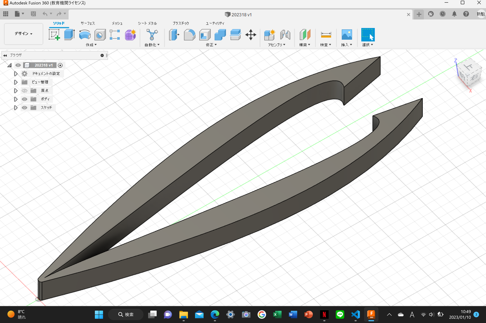
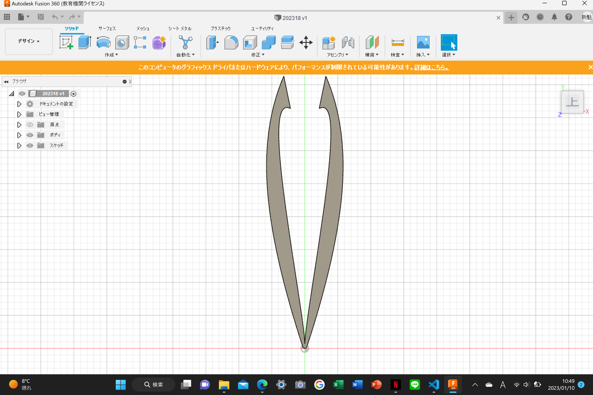

テーマ決め
ピンセットを作るにあたって最初にテーマを決めます。私は普段ピンセットを使わないので頭に思いついた単語をいくつか書き出してみます。
今回は「カップラーメン」をテーマにして作成していきます。
「カップラーメン」を作る時の手順
まずはカップラーメン専用のピンセットを作るために、カップラーメンを作る時の手順を細かく書き出していきます。
今回私はリストにある・フィルムを剥がす・かやくを取り除く・蓋を抑えるの３つの手順を行う時にそれを楽にするピンセットを制作していきます。
大まかな形をスケッチで決めていく
Fusion360を使ってピンセットを形作る
ピンセット本体を制作。蓋どめを付けるために長さを上限の5cmより少し短くしておきます。
 
次は蓋どめを制作して、本体に結合していきます。